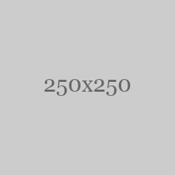

<!DOCTYPE html>
<html lang="en">
<head>
  <meta charset="UTF-8">
  <meta name="viewport" content="width=device-width, initial-scale=1.0">
  <title>图片懒加载DEMO</title>
  <link rel="stylesheet" href="./css/i.css">
</head>
<body>
  <div class="container">
    <div class="img-wrapper"></div>
  </div>
  <script>

    //初始化图片
    function initImgs(cb){
      let html = ''
      let wrap = document.querySelector('.img-wrapper')
      for(let i = 0;i< 42;i++){
        html += `<div class="img-item img-item-unrender" data-img-path="./img/${i+1}.jpg"></div>`
      }
      wrap.innerHTML = html 
      cb && cb()
    }

    function lazyLoad(){
      let imgList = document.querySelectorAll('.img-item-unrender')
      let imgListForShow = []
      let clientHeight = document.documentElement.clientHeight
      let scrollTop = document.documentElement.scrollTop
      imgList.forEach(ele =>{
        //方式一 检测 offset.top < clientHeight + scrollTop
        if(ele.offsetTop < clientHeight + scrollTop){
          renderItem(ele)
        }
        //方式二 检测 getBoundingClientRect().top < clientHeight
        // if(ele.getBoundingClientRect().top < clientHeight){
        //   renderItem(ele)
        // }
      })
    }

    window.addEventListener('scroll',simpleDelay(lazyLoad,1000),false)
    
    initImgs(() => setTimeout(lazyLoad,0))

    //简单优化
    function simpleDelay(fn,delay){
      let timer = null
      return function(...args){
        timer && clearTimeout(timer)
        timer = setTimeout(() => fn.apply(null,args),delay)
      }
    }

    function renderItem(ele){
      if(ele.classList.contains('img-item-render')){
        return
      }
      const eleImg = ele.querySelector('img')
      if(eleImg){
        let realImgPath = ele.dataset.imgPath
        eleImg.src = realImgPath
        ele.classList.remove('img-item-unrender')
        ele.classList.add('img-item-render')
      }
    }

    
    //方式三 利用  IntersectionObserver 监测dom是否可见
    // const io = new IntersectionObserver((entries) =>{
    //   entries.filter(ele => ele.intersectionRatio > 0).map(ele =>{
    //     renderItem(ele.target)
    //     io.unobserve(ele.target)
    //   })
    // })
    // initImgs(() => document.querySelectorAll('.img-item-unrender').forEach(ele => io.observe(ele)))

  </script>
</body>
</html>